8 Kasım 2026 · Samsung S22 / Android 16 · Gerçek cihaz
1.0.15 oturum ve kayıtlar korunarak kuruldu. Üç yerleşim düzeltmesi telefonda doğrulandı: yatay hafta, sabit kaydet/hata alanı ve kompakt set girişi. Üye hesabının doğrudan antrenör/yönetim bağlantılarına erişimi reddedildi.
Çevrimdışıyken ikinci squat seti kaydedildi. Uygulama zorla kapatılıp internetsiz yeniden açılınca 2/8 set, %25 ve bekleyen eşitleme durumu korundu. Wi-Fi geri gelince iki set eşitlendi. Telefonun ağ ayarları önceki Wi-Fi açık / mobil veri kapalı durumuna döndürüldü ve doğrulandı.
TEST-Telefon-QA-08.11.2026 planının Paz seansı açık onayla kısmen bitirildi: 2 set, toplam 16 tekrar, 4:01 aktif süre. İlerleme ekranı bir seans, iki set ve aynı süreyi gösterdi. Eksik altı set tamamlanmış sayılmadı. Yeni ağırlık verisi uydurulmadı.
Yerel soğuk ilk görüntü: çevrimiçi 583 ms, çevrimdışı yeniden açılış 508 ms. Tekil yerel ilk görüntü örnekleridir; tüm verilerin hazır olma süresini veya ortalama performansı göstermez. Önceki 1.0.14 örneğinin kare ölçümleri ayrı rapordadır. Bu turun son kare/bellek dökümü USB bağlantısı kesilince alınamadı.
76 mobil test, TypeScript ve hedefli lint geçti. 110 paket kaynağı ve imza doğrulandı. USB yeniden kaybolduğu için 1.0.16 kurulumu ve son üç düzeltmenin cihaz kontrolü bekliyor. Aşağıdaki görüntüler 1.0.15'tir.
1.0.16 APK · Ayrı NFC test kiti · Ayrıntılı test kapsamı
Girişli web antrenör yolculuğu ve olumlu antrenör/yönetici cihaz oturumları henüz yapılmadı. Gerçek kart okuma, isteğin doğrultusunda ayrı kaldı.
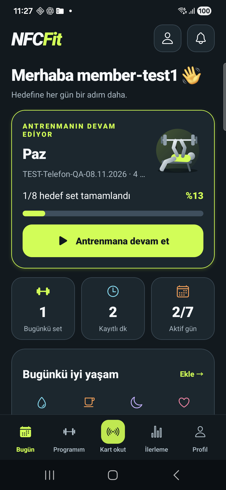
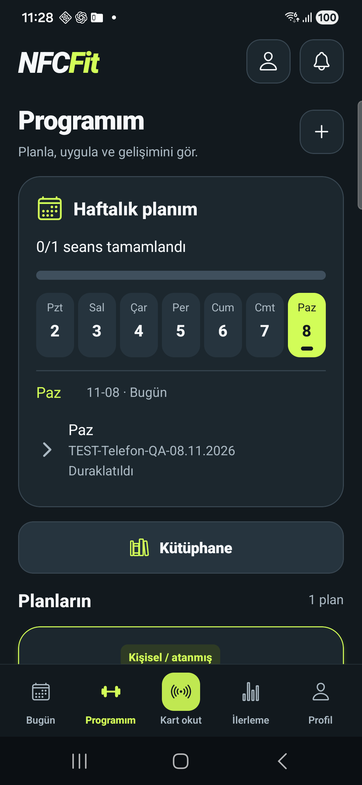
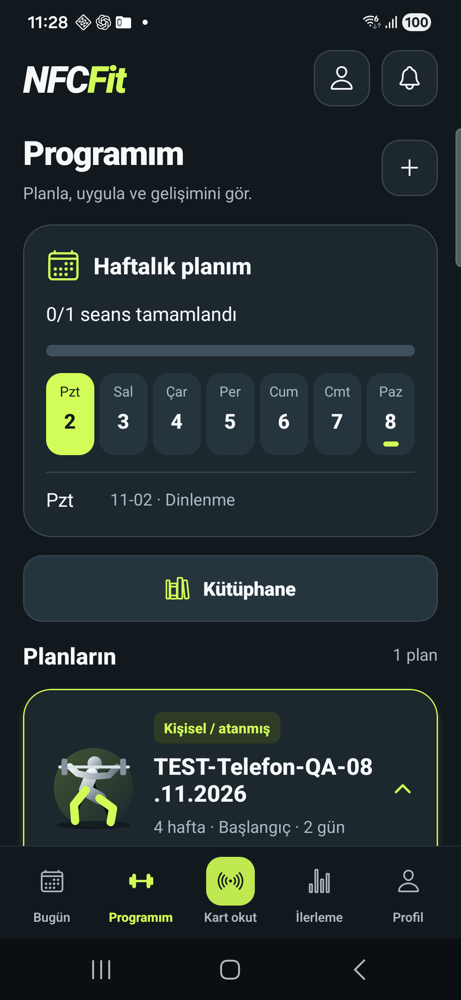
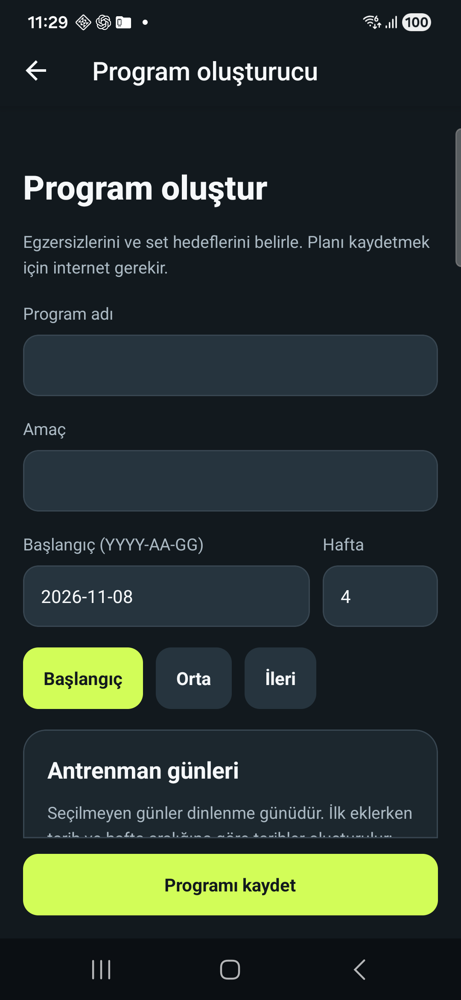
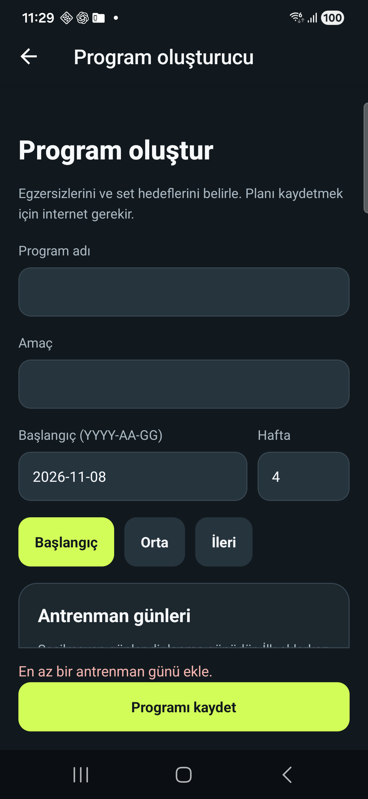
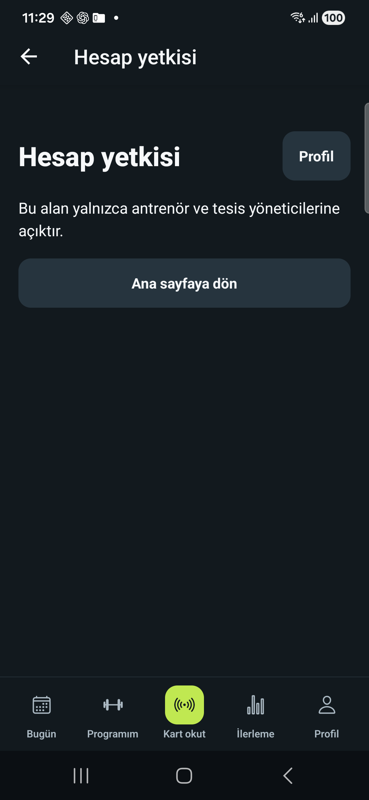
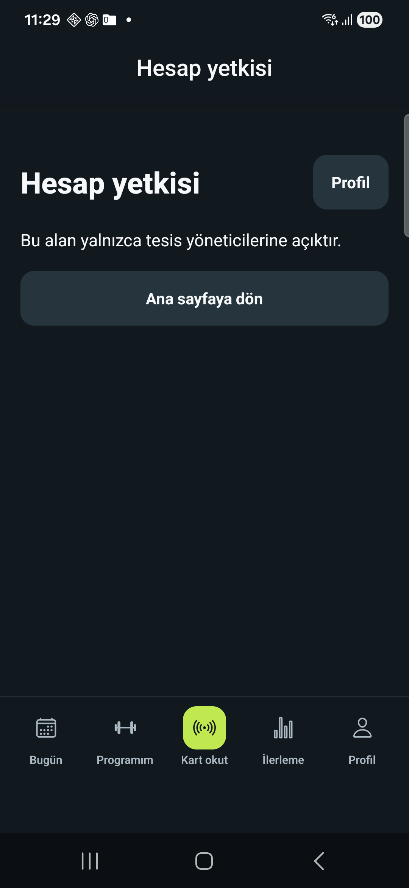
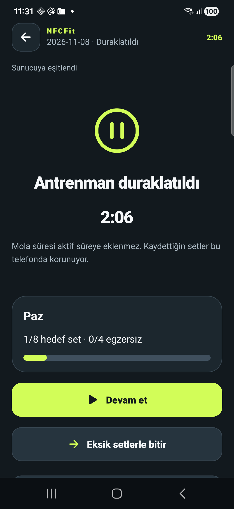
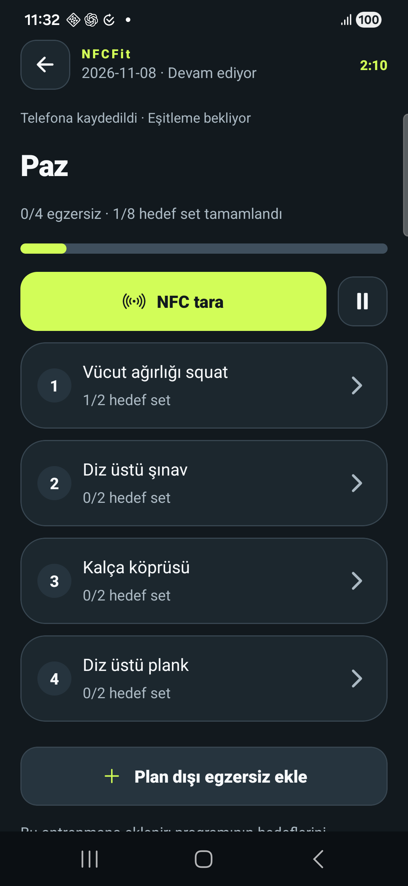
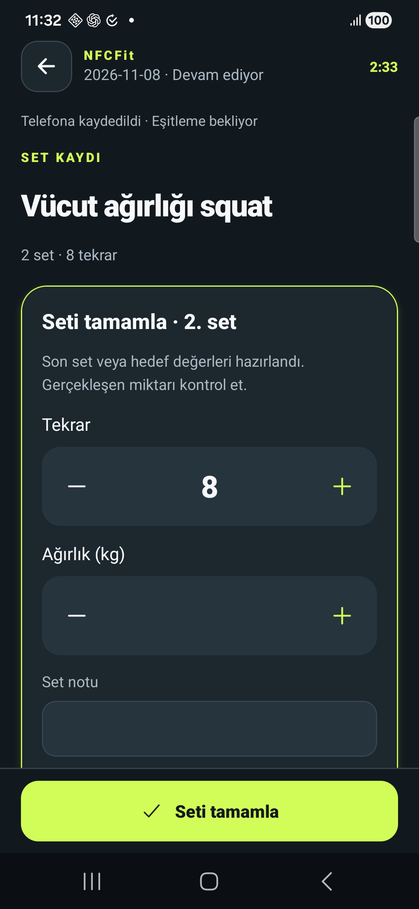
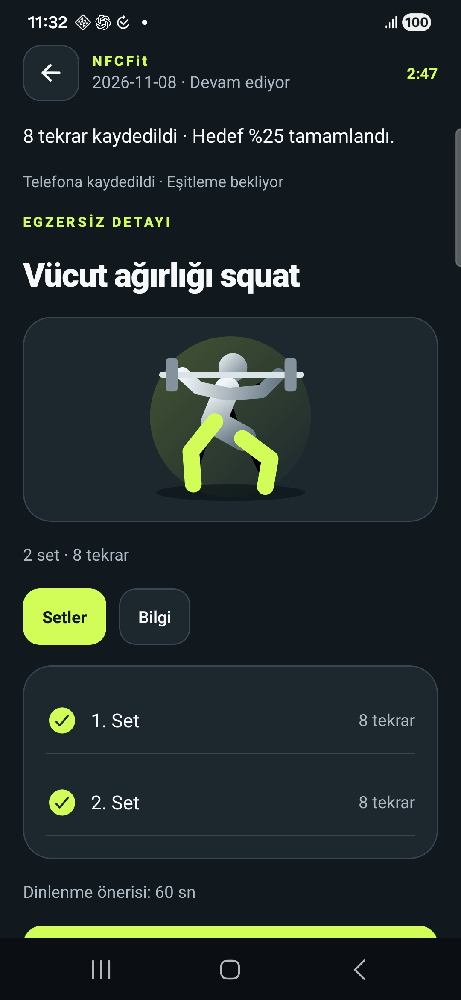
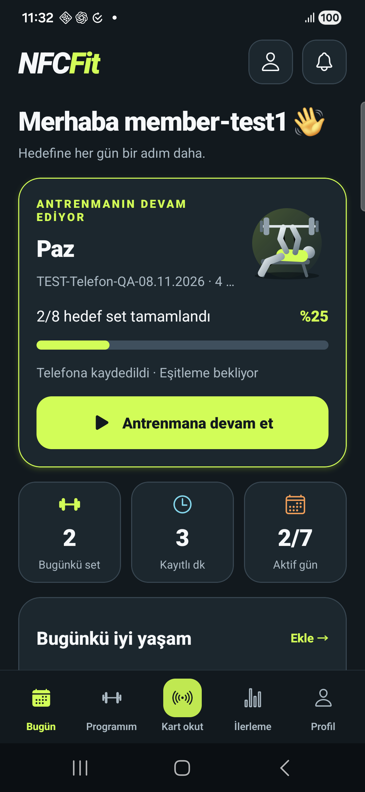
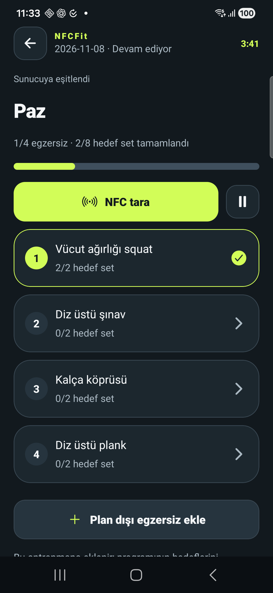
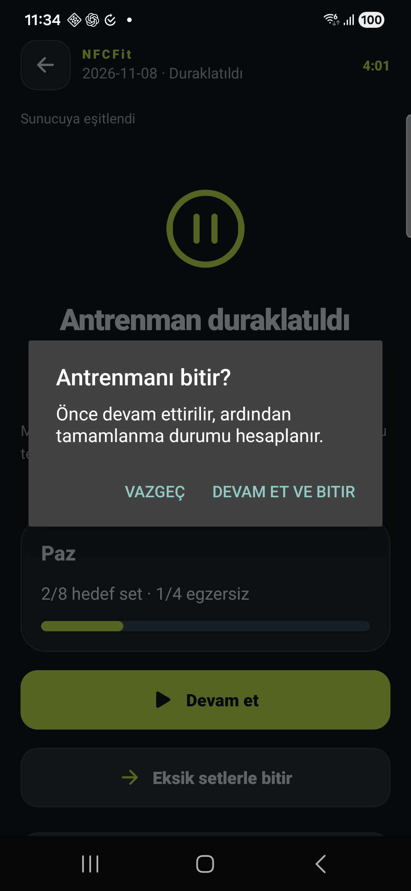
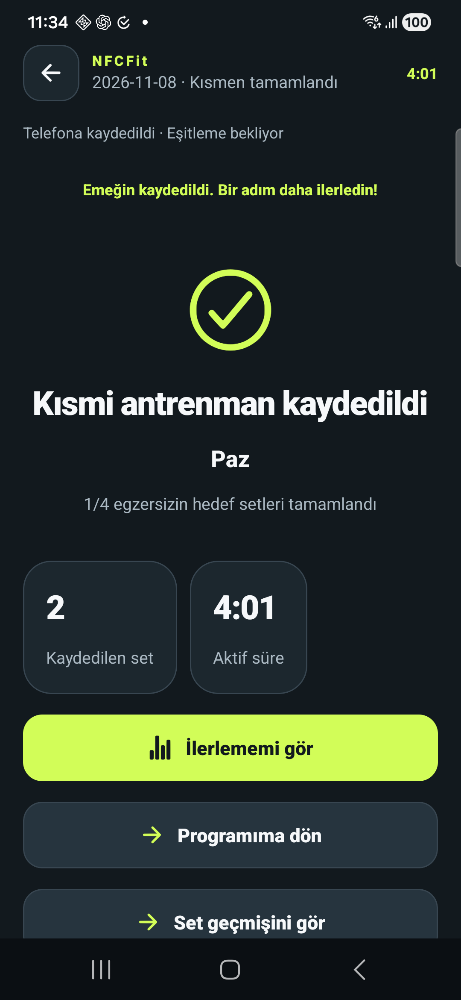
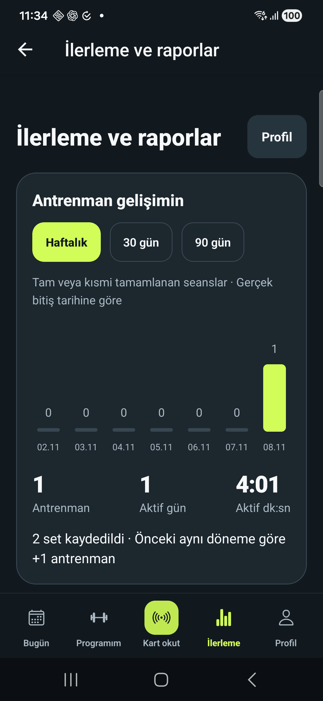
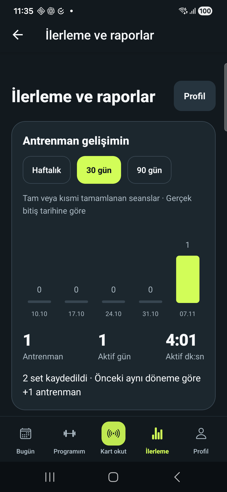
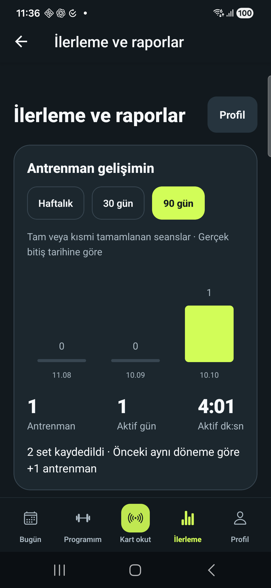
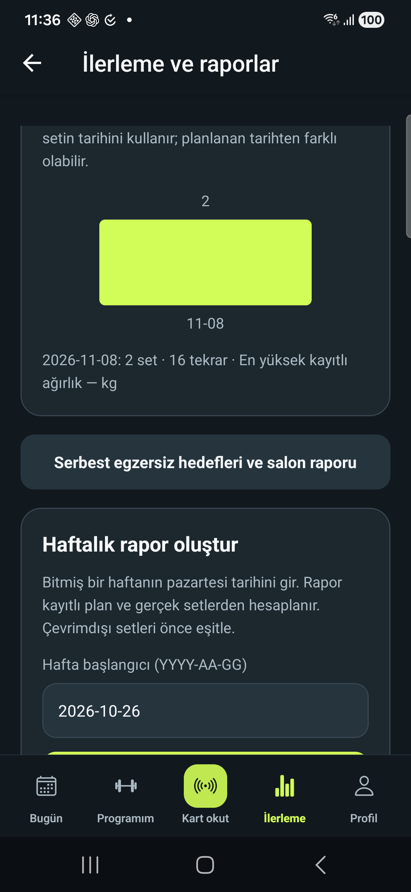
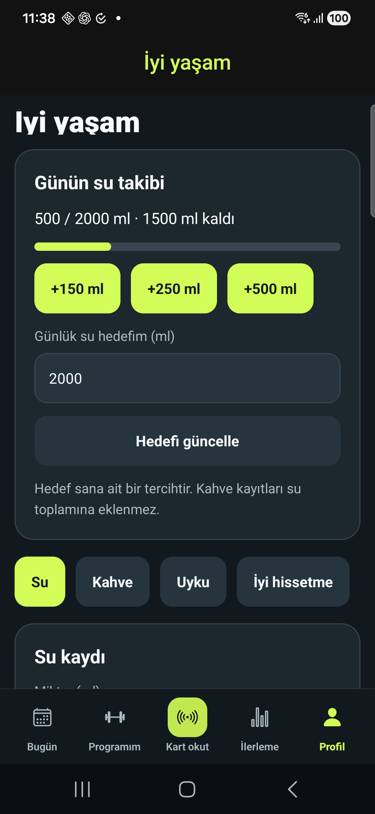
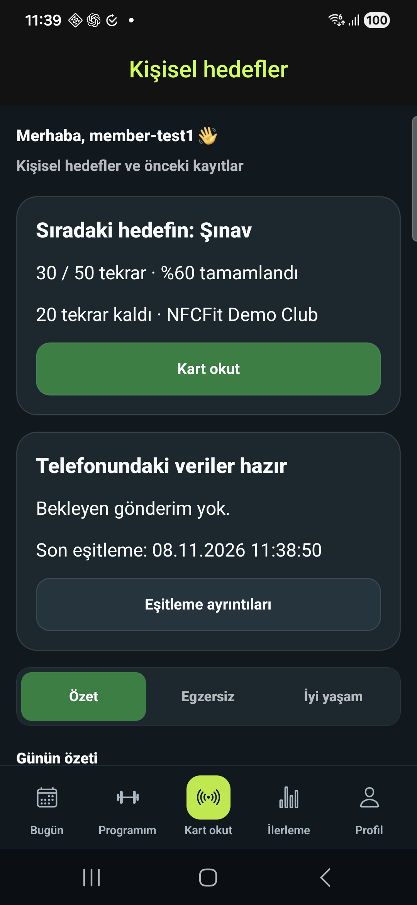